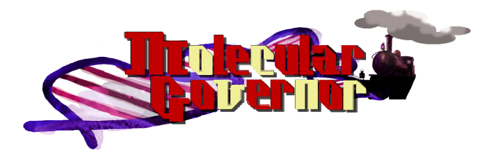

TeamKyutech
TeamKyutech

- 
Recently, development of molecular robot composed of biological molecules has been carried out. The goal of our project is to provide a basic technology for realizing motion control of molecular robot. Especially, it is necessary to establish a design method of the feedback controller in operating the robot. The role of the controller is to match controlled variable of the robot to the target value. Hence, we have attempted to design the controller for this robot. We design a model that considers the difference the controlled variable and the target value, and composed of DNA strand displacement reaction.
In the experiment, we would produce a permeation membrane that DNA strand can move, in order to reproduce the proposed model. The membrane design is carried out using a DNA reaction system simulation based on the reaction kinetics and the design theory of the membrane.
Additionally, we are also interested in whether the proposed controller design method for molecular robot can work an existing mechatronics robot well. Then, we will show some results with Mindstorm, that is, a “solid” mechatronics robot controlled by a “biological” feedback controller.